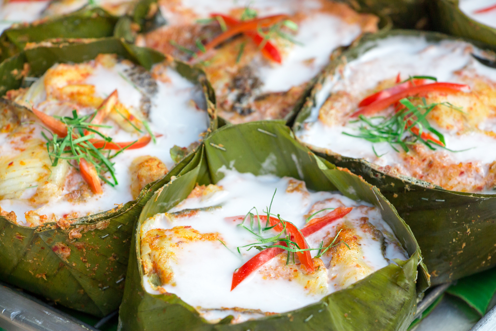
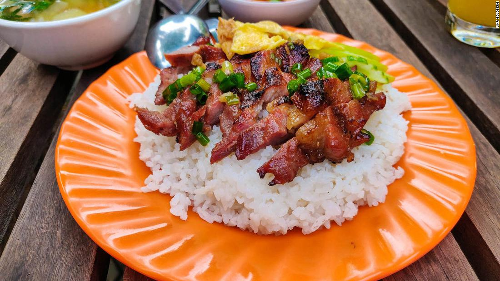
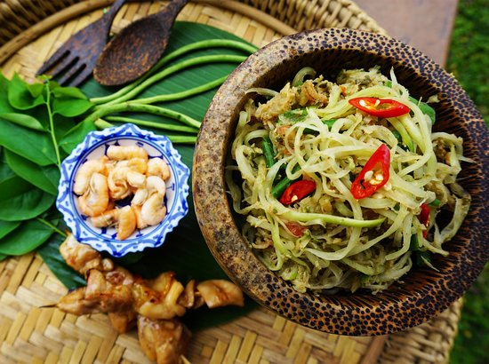

| Foods | Dish | Dish name |
|---|---|---|
| Refreshing? Hearty? Spicy? Cambodian food has it all! | These 3 dishes are a tourist's must-sees to enjoy the most out of Cambodian daily life and its more occassional delicacies! | |
|  | Fish Amok | |
|  | Bai Sach Chrouk (Pork and Rice) | |
|  | Green Papaya Salad | |
| Note: Ask Your Server About Ingredients! As most Cambodian dishes vary and most have meat and common allergens. | ||